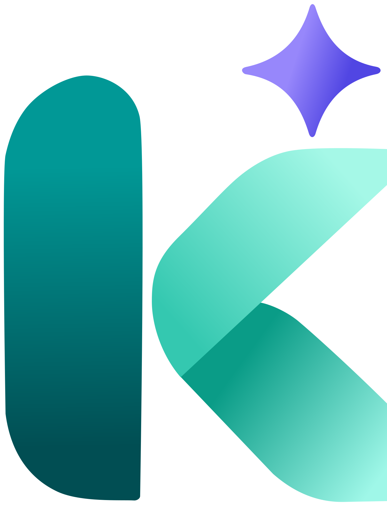
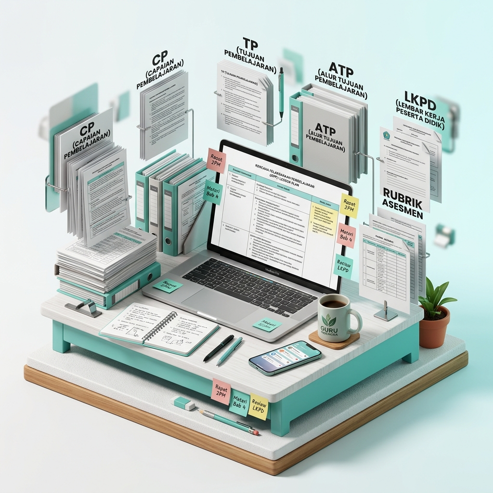

Kembalikan Waktu Berharga Anda!
Birokrasi Tuntas Dalam Hitungan Detik.
Hentikan lingkaran setan input data berulang di spreadsheet, chat, dan dokumen yang terpecah. KLASSA menyatukan administrasi, AI Modul Ajar, ujian anti-contek, dan pelaporan rapor ke dalam satu ekosistem terpadu.

Mengapa Waktu Mengajar Selalu Habis untuk Urusan Administrasi?
Guru Indonesia berniat mendidik, memotivasi, dan mencerdaskan generasi. Namun realitanya, energi terbesar justru tergerus oleh birokrasi berulang yang tersebar tanpa satu sistem pun yang saling terhubung.
Gelar Anda Pendidik, Tapi 60% Waktu Habis Sebagai Operator Entri Data
Guru berniat mendidik dan mencerdaskan generasi. Namun kenyataannya, energi terbesar Anda justru tergerus di depan spreadsheet, format dokumen berulang, dan tumpukan administrasi.
Tugas Administrasi & Birokrasi
±24 - 30 Jam / Minggu
- Susun Modul Ajar & RPP panjang dari nol
- Input ganda nilai & presensi ke banyak file
- Koreksi manual ratusan lembar ulangan malam hari
- Panik rekap deskripsi capaian e-Rapor semester
Waktu Mengajar & Bimbingan
±16 Jam / Minggu
- Tatap muka & menerangkan materi di kelas
- Bimbingan karakter & diskusi personal murid
- Membangun interaksi belajar yang bermakna
“Hampir 30 jam waktu Anda setiap minggu hilang hanya untuk melakukan hal yang sama secara berulang.”
1.200+ Jam Rutinitas Mikro yang Tersita Setiap Tahun
Hitungan menit yang tampak sepele setiap hari—mulai dari modul hingga e-rapor—jika diakumulasikan sepanjang tahun ajaran, menyita waktu berharga guru.
Menyusun Modul Ajar
“Bukan sekadar mengetik dokumen.”

Menyelaraskan Capaian Pembelajaran (CP), alur tujuan (ATP), modul ajar, lembar kerja murid (LKPD), hingga rubrik asesmen dari dokumen kosong.
Satu topik pembelajaran membutuhkan penyusunan berbagai komponen perangkat ajar.
Koreksi Ulangan Formatif
“Ratusan lembar jawaban di tangan.”
Baru satu kali ujian, belum termasuk rekapitulasi nilai.
Input Nilai & Presensi
“Ratusan sel spreadsheet yang harus diisi.”
Belum termasuk pengecekan rumus, presensi, dan pembaruan data.
Beban Deskripsi e-Rapor
“Ratusan narasi unik setiap semester.”
Belum termasuk verifikasi nilai akhir, revisi narasi, dan sinkronisasi data e-Rapor.
Coba Hitung Bebanmu
Setiap sekolah dan guru punya kondisi berbeda. Atur sesuai situasi Anda, dan lihat berapa banyak waktu yang berpotensi tersita.
Rincian Estimasi Waktu
Kombinasi beban administratif untuk 160 Siswa Total
Waktu Anda Terlalu Berharga untuk Habis di Depan Spreadsheet.
Bayangkan jika administrasi lebih sederhana, perangkat ajar lebih cepat disiapkan, dan data pembelajaran tersusun rapi dalam satu tempat.

Satu Ekosistem Manajemen Kelas Terpadu
Satu platform untuk seluruh rutinitas guru.
Hentikan lingkaran setan membuka banyak aplikasi dan spreadsheet terpisah. KLASSA menstrukturkan pekerjaan Anda ke dalam 4 ruang kerja terintegrasi dengan prinsip: Input Once, Use Everywhere.
Mengajar Lebih Fokus, Administrasi Tetap Tercatat.
Kelola perjalanan pembelajaran, presensi siswa, dan jurnal mengajar dalam satu alur yang praktis.
Linimasa Mengajar
Pertemuan 1 s/d 16Pantau perjalanan pembelajaran dari pertemuan pertama hingga akhir.
Cara Baru Menjalani Hari sebagai Guru.
Jelajahi pengalaman menyusun perangkat ajar, mengelola evaluasi, dan memanfaatkan teknologi dalam satu platform.
Cara Lama vs Cara Kerja yang Naik Kelas.
Kuantifikasi perbedaan nyata pada jam kerja mingguan, tingkat stres, dan kualitas mengajar Anda bersama KLASSA.
| Aktivitas Guru | CARA LAMA (Manual & Tersebar) | BERSAMA KLASSA (Teacher OS Terpadu) |
|---|---|---|
|
1. Presensi Siswa Harian Per Sesi Kelas |
10–15 Menit
Memanggil nama 36 siswa satu per satu dari kertas absen fisik, mencatat di buku, lalu merekap manual ke spreadsheet di akhir pekan.
|
1–2 Menit
⚡ 85% Lebih Cepat
Buka sesi Live Teaching, klik "Tandai Semua Hadir", lalu toggle cepat [S/I/A/T] bagi siswa yang berhalangan. Rekap kumulatif otomatis terupdate seketika.
|
|
2. Jurnal Mengajar Harian Administrasi Sesi |
15–20 Menit
Menulis tangan di buku agenda guru atau mengetik ulang judul materi, jam ajar, dan refleksi harian yang formatnya repetitif.
|
2–3 Menit
⚡ 85% Lebih Cepat
Topik otomatis terisi sinkron dari jadwal pelajaran mingguan, dilengkapi tombol "✨ Buat Catatan Otomatis via AI" untuk draf refleksi kelas instan.
|
|
3. Input Nilai & Pembobotan Kalkulasi Hasil Belajar |
30–45 Menit
Memasukkan nilai satu per satu dari kertas ulangan ke Excel, membuat formula perkalian bobot manual, menghitung rerata tugas dan asesmen.
|
5–10 Menit / 1-Klik
⚡ 80% Lebih Cepat
Matriks Buku Nilai responsif dengan formula bobot dinamis (Tugas/Formatif/Sumatif). Nilai akhir dan status kelulusan terhitung otomatis secara real-time.
|
|
4. Penyusunan Modul Ajar / RPP Kurikulum Merdeka |
3–6 Jam
Mencari referensi, menyalin CP/TP, merancang apersepsi, kegiatan inti (PBL/PjBL), langkah asesmen, rubrik, dan penutup dari dokumen kosong.
|
5–10 Menit
⚡ 95% Lebih Cepat
Generator AI menyusun draf lengkap berstandar regulasi Kemendikbudristek dalam hitungan detik, langsung siap diunduh format Microsoft Word (.docx).
|
|
5. Pembuatan Slide PPTX Media Presentasi Visual |
2–4 Jam
Membuka PowerPoint kosong, mencari template visual, copy-paste materi teks panjang, mengatur font layout, dan menyiapkan naskah bicara manual.
|
3–5 Menit
⚡ 95% Lebih Cepat
Adaptive PPT Engine menghasilkan slide visual modern berstruktur non-monoton, poin materi ringkas, dan Speaker Notes narasi guru siap tayang.
|
|
6. Penyusunan LKPD Siswa Lembar Aktivitas Belajar |
1.5–3 Jam
Merancang skenario masalah kontekstual, instruksi praktikum/studi kasus, tabel observasi, dan kolom isian jawaban murid secara manual.
|
3–5 Menit
⚡ 95% Lebih Cepat
AI Studio menghasilkan LKPD berbasis aktivitas nyata dan fenomena kontekstual lengkap dengan instruksi terstruktur dan ruang isian siswa siap cetak.
|
|
7. Kisi-Kisi & Bank Soal HOTS Instrumen Asesmen |
2–4 Jam
Menyusun tabel matriks taksonomi Bloom, merumuskan stimulus kontekstual, membuat 4–5 opsi pengecoh, serta kunci jawaban dan rubrik essay.
|
5–8 Menit
⚡ 90% Lebih Cepat
AI menyusun kisi-kisi lengkap dengan sebaran level kognitif C1–C6, butir soal PG/Essay bermutu tinggi, kunci jawaban, dan pembahasan mendalam.
|
|
8. Pelaksanaan & Koreksi Kuis Evaluasi 36 Siswa |
60–90 Menit
Mencetak kertas ujian, membagikan, mengawasi fisik, mengumpulkan, dan memeriksa satu per satu lembar jawaban murid dengan bolpoin merah.
|
0–5 Menit
⚡ 95% Lebih Cepat
Bagikan tautan kuis digital web + PIN kelas. Jawaban PG terkoreksi 100% otomatis saat siswa submit, nilai langsung masuk ke Buku Nilai.
|
|
9. Pelacakan Remedial (KKTP) Intervensi Ketuntasan |
20–30 Menit
Mencari manual nama-nama murid yang nilainya di bawah KKM/KKTP, membuat rekap remedial terpisah, lalu memperbarui nilai pengganti.
|
Radar Instan
⚡ 100% Otomatis
Sistem otomatis menandai badge "Butuh Remedial" pada siswa di bawah ambang KKTP beserta histori pencatatan ujian perbaikan.
|
|
10. Pelaporan Rapor Semester Rekap Capaian Akhir |
3–5 Hari Kerja
Menggabungkan puluhan sheet Excel tercecer, menghitung nilai akhir, menyusun kalimat deskripsi capaian rapor satu per satu hingga lembur malam.
|
10–15 Menit
⚡ 95% Lebih Cepat
Sistem mengagregasi data semester otomatis, menghasilkan rekap nilai terformat rapi dan deskripsi naratif siap ekspor ke Excel / PDF e-Rapor.
|
|
11. Komunikasi ke Orang Tua Update Perkembangan Murid |
2–3 Jam / Minggu
Membalas chat WhatsApp orang tua satu per satu secara repetitif menanyakan kehadiran, kepatuhan tugas, dan nilai ulangan anak.
|
0 Jam (Self-Service)
⚡ 100% Tereliminasi
Orang tua memantau kehadiran dan capaian nilai resmi anak mereka secara mandiri dan transparan melalui Portal Orang Tua kapan saja.
|
| CARA LAMA (Manual & Tersebar) | BERSAMA KLASSA (Teacher OS) |
|---|---|
|
1. Modul Ajar / RPP Kurikulum Merdeka
|
|
|
3–6 Jam
Mencari referensi, menyalin CP/TP, dan merancang asesmen & rubrik dari dokumen kosong. |
5–10 Menit
⚡ 95% Cepat
AI susun draf lengkap standar regulasi BSKAP, langsung siap ekspor Word (.docx). |
|
2. Presensi Siswa & Jurnal Harian
|
|
|
25–35 Menit
Panggil 36 siswa dari absen kertas, tulis agenda kelas fisik, dan rekap manual ke Excel. |
1–2 Menit
⚡ 85% Cepat
1-Tap "Tandai Semua Hadir", topik otomatis sinkron jadwal pelajaran mingguan. |
|
3. Pelaksanaan & Koreksi Kuis
|
|
|
60–90 Menit
Cetak kertas soal, mengawasi fisik, dan koreksi satu per satu 36 lembar pakai bolpoin merah. |
0 Menit
⚡ Otomatis
Siswa kuis via HP/PIN kelas, jawaban PG terkoreksi 100% otomatis ke Buku Nilai. |
|
4. Slide Media Pembelajaran (PPTX)
|
|
|
2–4 Jam
Buka PPT kosong, cari template visual, tata materi teks panjang dan naskah bicara manual. |
3–5 Menit
⚡ 95% Cepat
AI hasilkan slide visual interaktif terstruktur + Speaker Notes narasi guru siap tayang. |
|
5. Rekap Nilai & e-Rapor Semester
|
|
|
3–5 Hari Kerja
Gabung puluhan spreadsheet tercecer, hitung bobot manual, dan ketik narasi rapor satu per satu. |
10–15 Menit
⚡ 95% Cepat
Formula bobot otomatis real-time, narasi capaian AI siap ekspor e-Rapor / Excel. |
Birokrasi Tuntas Dalam Hitungan Detik
Hemat Hingga 29 Jam Setiap Pekan
Asisten AI pribadi yang mengurus Modul Ajar, koreksi ujian otomatis, dan rekapan nilai Kurikulum Merdeka Anda dalam satu ruang kerja cerdas.
Investasi Kecil untuk Mengembalikan
Berjam-jam Waktu Anda.
Pilih paket yang paling sesuai dengan kebutuhan ruang kerja Anda. Transparan tanpa biaya tersembunyi.
Paket Bulanan
Fleksibilitas penuh untuk guru yang ingin mencoba ekosistem terpadu secara bulanan.
- AI Modul Ajar Kurikulum Merdeka
- Smart Assessment & Kuis Anti-Contek
- Presensi 1-Tap & Jurnal Digital
- Student Monitoring & Remedial
- Ekspor Word (.docx) & Excel (.xlsx)
- Portal Siswa Ringan (NIS & PIN)
Paket Semester
Pilihan paling ideal & hemat untuk 1 semester tahun ajaran penuh.
- Seluruh fitur Paket Bulanan lengkap
- Penyimpanan arsip 1 semester
- Generator Soal UTS & UAS
- Akses modul Prota & Prosem otomatis
- Dukungan prioritas via WhatsApp
Paket Tahunan
Nilai terbaik & terlengkap untuk ketenangan mengajar 1 tahun ajaran.
- Seluruh fitur tanpa batas kuota
- Prioritas antrean server AI tercepat
- Penyimpanan arsip tanpa batas
- Akses modul Prota & Prosem 1 tahun
- Dukungan VIP via WhatsApp
Ingin Menyatukan Seluruh Sistem Digital Sekolah dalam Satu Tempat?
Hentikan repotnya mengelola vendor berbeda untuk administrasi guru, tagihan SPP siswa, dan laporan yayasan. Kami bantu bangun dan integrasikan fitur-fitur yang sekolah Anda butuhkan ke dalam satu ekosistem terpusat.
GARANSI 100% UANG KEMBALI (14 HARI)
Gunakan KLASSA selama 14 hari. Jika sistem ini terbukti tidak membantu meringankan beban administrasi Anda, hubungi kami dan uang Anda kami kembalikan 100% penuh tanpa potongan.
Elevate Your Class
Saatnya Naikkan Kelasmu!
FAQ
KLASSA adalah platform terpadu yang membantu guru mengelola kegiatan mengajar, mulai dari perencanaan pembelajaran, presensi, materi ajar, tugas, kuis dan ujian, penilaian, hingga pelaporan hasil belajar. Semuanya dirancang dalam satu ekosistem agar pekerjaan guru lebih terorganisir dan tidak perlu berpindah-pindah aplikasi.
KLASSA dirancang dengan alur kerja yang sederhana dan tampilan yang mudah dipahami. Guru dapat mengakses fitur melalui Portal Guru yang terstruktur, tanpa harus menguasai keterampilan teknis atau pemrograman.
Guru dapat menyiapkan kuis dan evaluasi melalui Portal Guru, sementara siswa mengerjakannya melalui Portal Siswa. KLASSA dirancang untuk membantu pengelolaan pengerjaan, jawaban, dan hasil evaluasi dalam satu alur. Fitur pengawasan ujian membantu mendeteksi aktivitas tertentu, tetapi tidak menjamin seluruh bentuk kecurangan dapat dicegah.
Portal Guru dirancang untuk ruang kerja yang lebih luas, sedangkan Portal Siswa dioptimalkan untuk penggunaan melalui ponsel.